정기연습 시간 · 비8장르 세션/워크샵
운영진 동의 → 공개 모집 → 투표 댓글에 장르·인원 기재. 공간이 부족하면 8장르를 우선 배정.
신규 운영진과 기존 운영진을 위한 교육 워크샵
H.I.S. OPERATIONS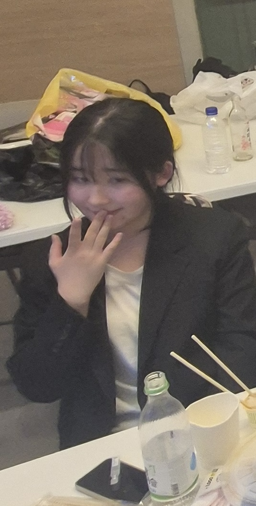
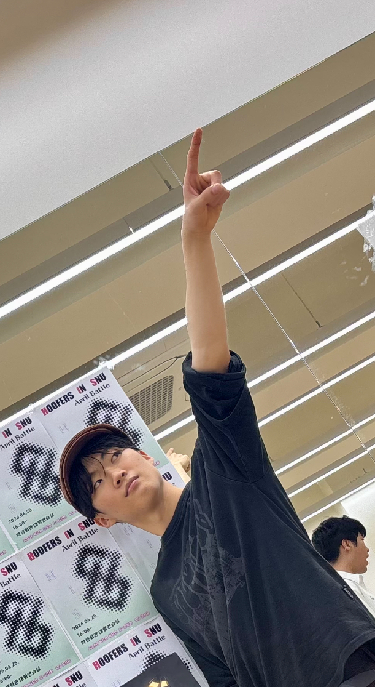
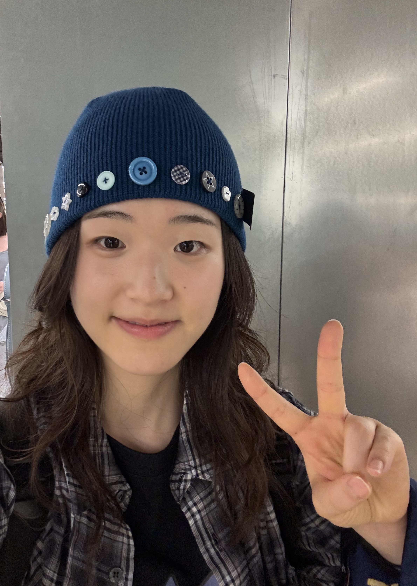
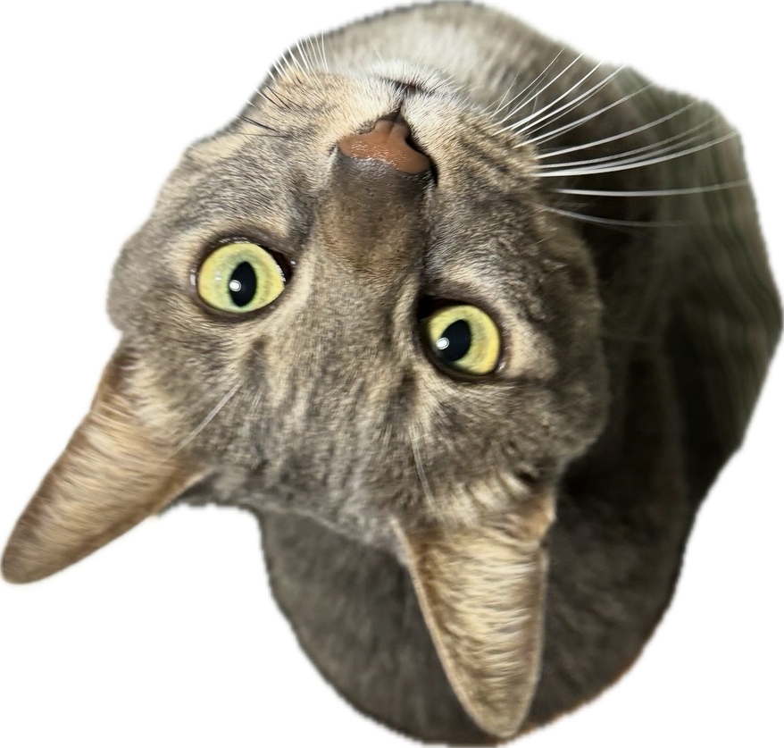
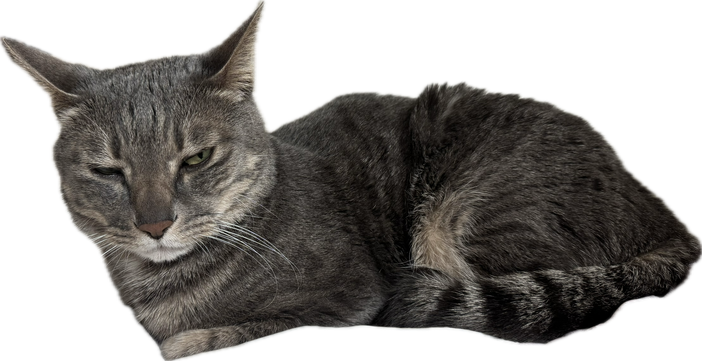
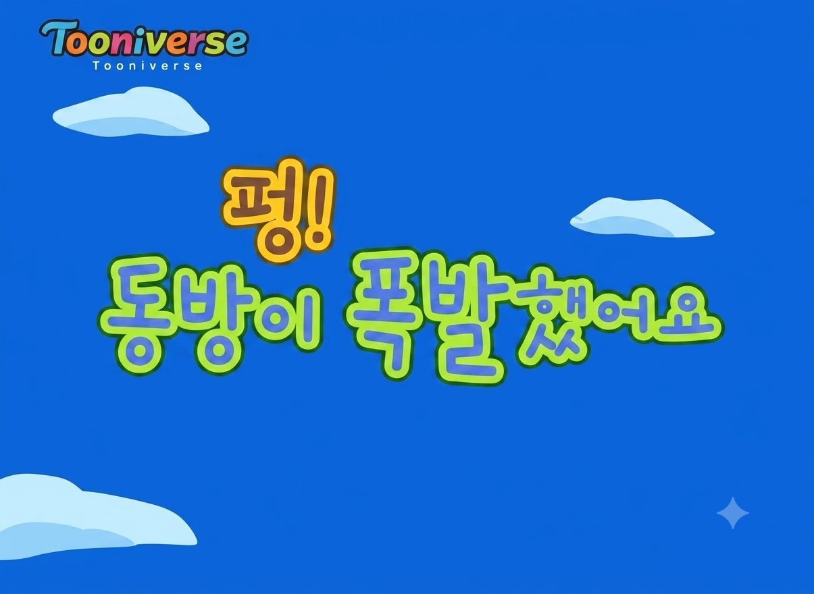
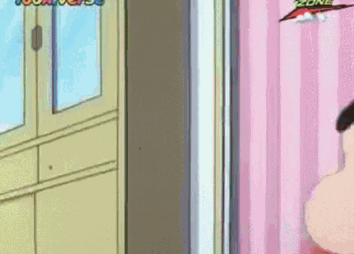
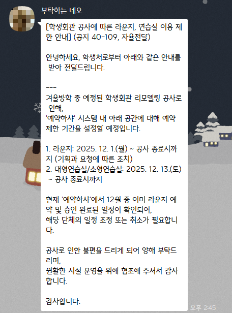
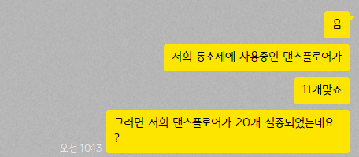
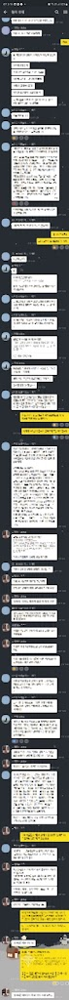
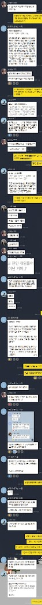
지난주에 한 긴급회의
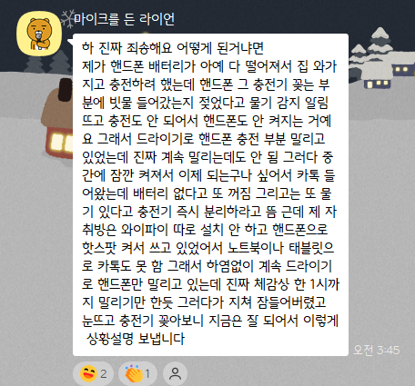
운영팀 마스코트(중요)
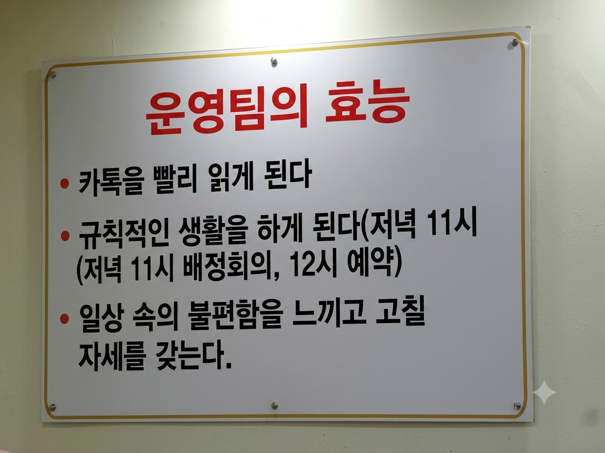
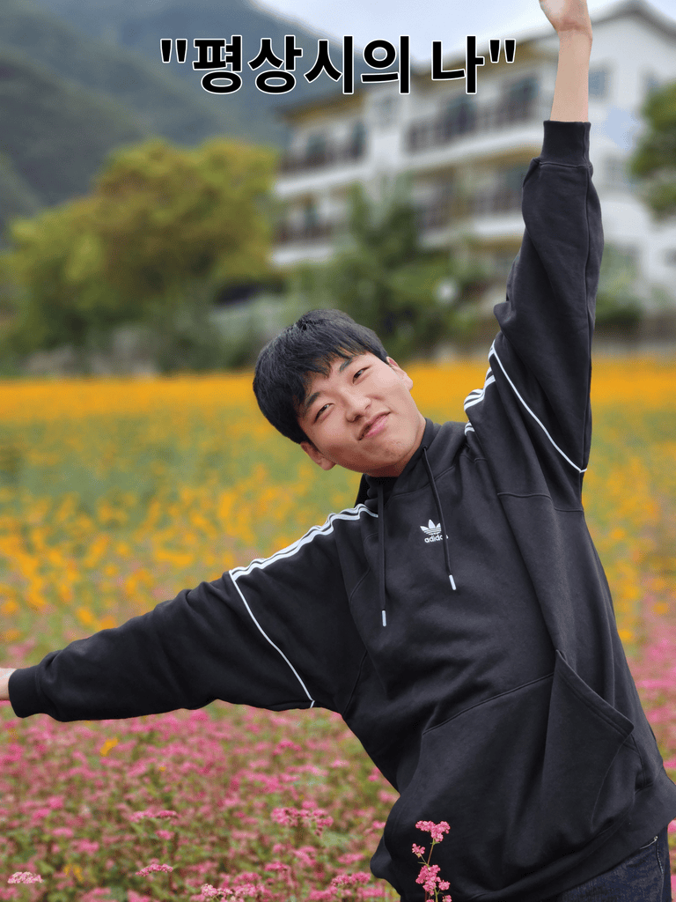
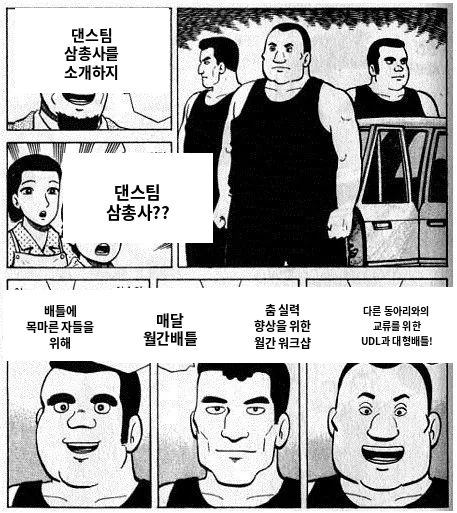
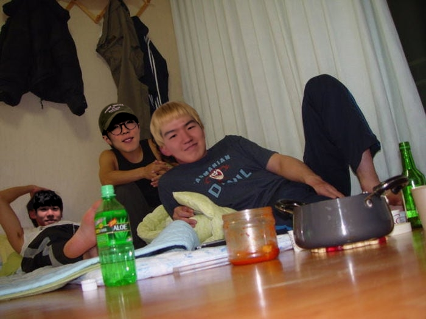
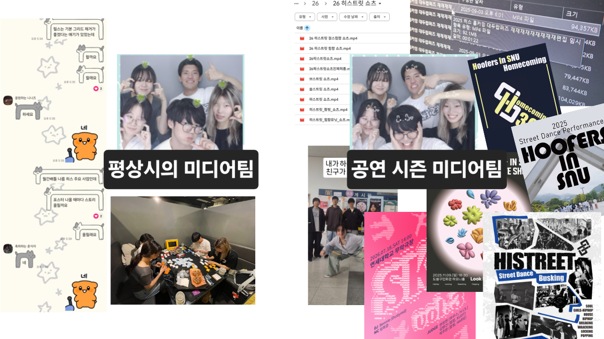
서기팀
신입 운영진
소개
상황을 듣고,
어느 팀장에게 말해야 할지 골라봅시다.
운영진의
역사
코로나 전후, 운영의 방식은 어떻게 달라졌을까?
각 연도 버튼에 마우스를 올리거나 키보드로 초점을 옮기면 상세 내용이 이 한 곳에 나타납니다.
출처 · 운영 워크샵 원안
12 / 56코로나 이전부터 무임승차 등의 문제점이 제기되었습니다.
초기에는 OB 중심이었고, 점차 주기수와 저년차 가족기수 중심으로 변화했습니다.
2026 원활한 소통과 자문을 위해 고문 도입
출처 · 운영 워크샵 원안
13 / 56H.I.S.를
움직이는 원리
정체성 · 정기연습 · 장르 · 규정
스트릿댄스 문화를
함께 향유하고
자아실현과 친목을 도모한다
공연은 하지만 공연을 위한 동아리는 아니다
출처 · 회칙 제2조(스트릿댄스 문화 형성을 통한 개인의 자아실현·회원 간 친목) · 운영 워크샵 원안(문화 향유·공연을 위한 동아리가 아니라는 설명)
15 / 56출처 · 운영진 내규 제4장(장르 및 정기연습)
16 / 56혼자서도, 여럿이서도.
실력을 기르고 춤을 즐기는 시간.
출처 · 운영진 내규 제4장(모든 부원에게 열린 정기연습) · 운영 워크샵 원안(YB·OB·장르 간 친목, 개인·그룹 연습의 목적)
17 / 56각 장르와 장르책에 관한 규정은 회칙과 운영진 내규가 함께 정합니다.
출처 · 회칙 제18조(장르 및 장르책) · 운영진 내규 제4장
18 / 561n년 넘게 이어진 8개 장르
각 장르에서 활동해 온 OB 선배들
소울 · 아프로 · 보깅 등 새로운 접점
역사적 맥락이 만든 미묘한 차이
출처 · 운영 워크샵 원안 · 운영진 내규 제4장(기본 8장르)
19 / 56운영진 동의 → 공개 모집 → 투표 댓글에 장르·인원 기재. 공간이 부족하면 8장르를 우선 배정.
비8장르를 세우려면 운영진의 검토를 받는다.
비8장르 YB 무대는 금지. OB로만 구성한 쇼케이스는 8장르 무대를 우선으로 받고, 시간에 여유가 있을 때 허용 가능.
댄스팀이 정한 기준에 따른다.
출처 · 운영진 내규 제4장(비8장르 정기연습·행사·홈커밍 무대·댄스팀 주관 행사별 기준)
20 / 561학기 정기연습을 진행하며 장르를 알려주고, 신입들이 H.I.S. 생활에 적응하도록 돕습니다.
출처 · 운영 워크샵 원안(신입 적응 지원) · 회칙 제18조·운영진 내규 제4장(장르책 역할·최소 연습) · 운영진 내규 제3장·제4장(출석포인트)
21 / 56운영진이 필요에 따라 자체적으로 정하여 운영 활동 수행에 참고하는 규정입니다.
CLICK → 다음 블록운영진 내규를 확인하는 아카이브
출처 · 운영진 내규 제1장(총칙) · 운영 워크샵 원안
22 / 56카페에 많은 관심을 가져주세요.
출처 · 운영 워크샵 원안 · 운영진 내규 제1장(내규 공고)
23 / 56기준 문서 · 회칙 [2026.01.19. 개정] 제23조 · 운영진 내규 [2026.02.18. 운영회의 의결] 제1장 · 카페 내용은 운영 워크샵 원안
24 / 56내규와 회칙
상황을 읽는다
회칙 또는 내규를 찾는다
근거 조항을 말한다
카드를 뒤집어 확인한다
쉬는 시간
잠깐 쉬고, 운영 실무로 이어갑니다.
그 밖의 운영진 임무는 운영회의에서 결정합니다.
출처 · 회칙 [2026.01.19. 개정] 제9조(운영진의 구성 및 업무)
33 / 56동아리와 부원들을 사랑하는 마음으로, 여러 상황에서 한 발 먼저.
출처 · 회칙 제9조(운영진 구성·필수 업무) · 운영 워크샵 원안(쓰레기 정리·문단속·스피커 정리 예시)
34 / 56팀장 개인의 역할은 팀별로 다르며, 운영회의 안건을 최종적으로 올립니다.
전체 논의가 필요한 피드백 요청입니다.
좋아요. 확인했습니다!
잘 모르겠어요. 조금 더 설명해 주세요.
협업과 논의가 묻히지 않도록 잡담은 적당한 선에서.
다른 공지와 겹치지 않는지도 함께 확인합니다.
01 가벼운 공지도 여러 시선으로 점검하기
02 참여 자격·제한에는 명확한 이유 붙이기
03 질문에 공지를 그대로 인용할 만큼, 정보는 빠짐없이
04 구글폼이 있다면 세부 내용은 폼에서 확인하도록 안내
05 링크·문단·기호로 한눈에 읽히게
06 비운영진 눈으로 읽고, 톡방 검토·승인에 반응하기
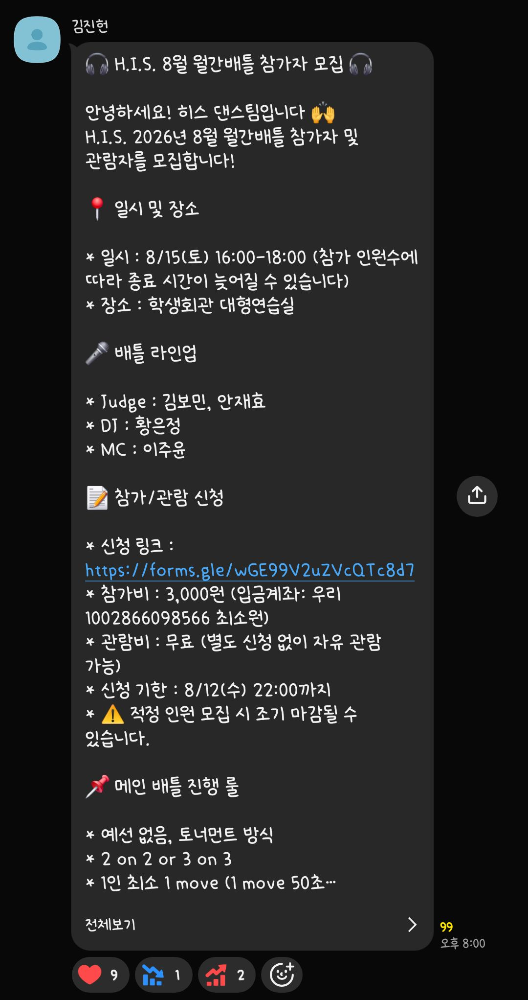
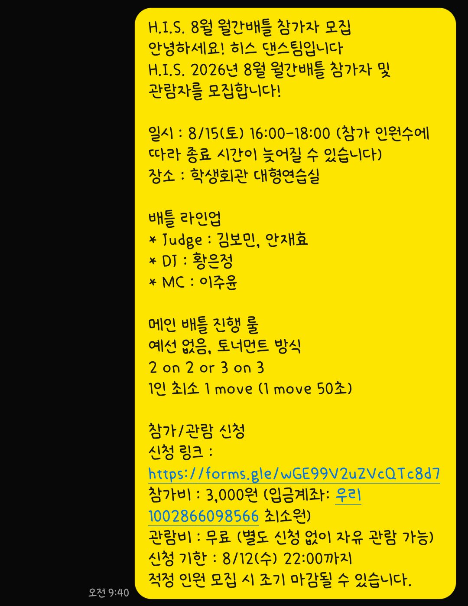
기존 공지방의 공지글을 참고해 H.I.S. 굿즈 구매조사 공지를 작성해봅시다.
GPT 등을 활용해도 좋습니다. 공지를 처음 보는 사람이 의문을 갖지 않게 쓰는 것이 포인트!
미리 일정을 비워두고, 불가피한 경우 회장단에 보고합니다.
출처 · 회칙 제15조·운영진 내규 제5장(첫째·셋째 수요일, 참석 의무) · 운영 워크샵 원안(22:30, 비대면 CAM ON)
41 / 56전체 운영진의 논의가 필요한 사항을 충분히 준비합니다.
발언권을
얻는다
기수와 이름을
먼저 말한다
한 번에
한 주제
주장과 근거를
명확히 정리한다
발언자를 회의록에 정확히 남기기 위한 방식입니다.
팀 내 검토를 먼저 마칩니다.
예상 질문과 빠뜨린 점을 확인합니다.
다른 팀이 모르는 맥락과 배경을 충분히 설명합니다.
팀 논의를 넘어 운영진 전체가 고민해야 하는 문제를 올립니다.
팀에서 정할 수 있는 일은 먼저 정한 뒤 보고하거나 운영진 톡방에서 승인받습니다.
행사 등의 업무를 시작하기 전에 기록과 맥락을 먼저 확인합니다.
출처 · 사용자 추가 요청(업무 인수인계 원칙)
46 / 56매 운영회의마다 서기가 속기록을 정리해 카페에 올립니다.
신입부터 가족기수까지 많은 부원이 회의록을 봅니다.
깔끔한 논의가 오래 읽히는 기록을 만듭니다.
출처 · 운영 워크샵 원안(서기의 속기록 정리·카페 게시·회의록 열람)
47 / 56각 팀에서 실제 안건을 작성해봅시다.
과거에 올렸던 안건을 다듬어 보고안건 또는 논의안건으로 정리한 뒤 카톡방에 올려봅시다.
내역 작성
영수증 사진 + 환급 요청
출처 · 사용자 제공 회계 처리 절차
50 / 56고문은 운영진의 업무를 돕고, 여러분의 의사결정을 최대한 존중합니다.
팀 톡방에서 실시간으로 업무에 대한 조언을 받을 수 있습니다.
출처 · 운영 워크샵 원안(역할·팀 톡방·의사결정 존중) · 회칙 제12조(자문위원·고문을 둘 수 있는 근거)
51 / 56운영팀19기 조영빈, 25기 이성은, 28기 박찬영
댄스팀22기 김형우, 23기 박진우, 25기 안혜수, 25기 이성은
활동팀23기 정여림, 23기 박진우, 19기 조영빈
미디어팀22기 김형우, 23기 정여림
그 외23기 정영준, 25기 채 향, 29기 서지훈
출처 · 운영 워크샵 원안(현재 고문 명단) · 회칙 제12조(자문위원·고문을 둘 수 있는 근거)
52 / 56많은 OB 가족기수가 있다는 점은 H.I.S.의 장점입니다. 무조건 따르거나 개인 의견으로 답하지 않고, 어떤 논의를 거쳐 결정했는지 설명합니다.
H.I.S.의 1년
한 바퀴 퀴즈
정기연습 밖에서 이어지는 우리의 연간 사이클
홈커밍부터 정기공연, 히스트릿, 총회, 신입모집, 워크샵, 배틀, MT와 온라인 채널까지.
저녁식사 시간!